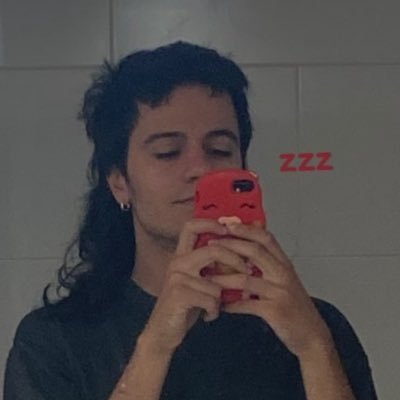

que logarítmicamenteestoy más cerca de tener millones de seguidores que mucha gente que conozco, que, de hecho, la mayoría de gente que conozco
y como que
mola esta imagen porque salgo megacuqui, bastante no-binario, y ccomo que las líneas entre las baldosas te dejan claro que es pladur o hormigón armado o ladrillo, que es el interior de un edificio que se ha hecho hace poco y que hay luz artificial, que no puedes saber qué hora es por ello ni si hace buen o mal día nada, de hecho no ves ni mis ojos porque mis ojos están concentrados en posar para que lo que manu vea sea lo que tu ves exactamente lo que tú ves éso es lo que hago en twitter hago fotos de mis pensamientos hago lo mismo que hago aquí pero en público y con cosas cuya poesía no es tradicional sino es el juego que hay entre ello es el arte cuya técnica es pintar el contexto y descontextualizar y generar imágenes nuevas de viejas es como sacar un pistacho de una nuez que sacas de la suela de tu zapato
y yo le hago una "foto" entendiendo la fotografía como algo meta-multimedia porque mi cerebro funciona con tantas metáforas de lo digital que ya soy uno con éso tan nuevo y de tan más allá que creo que antes se entendía más y se dejó de entender, es como que antes la gente estaba así, tranquila, sus días eran calmados y agradables